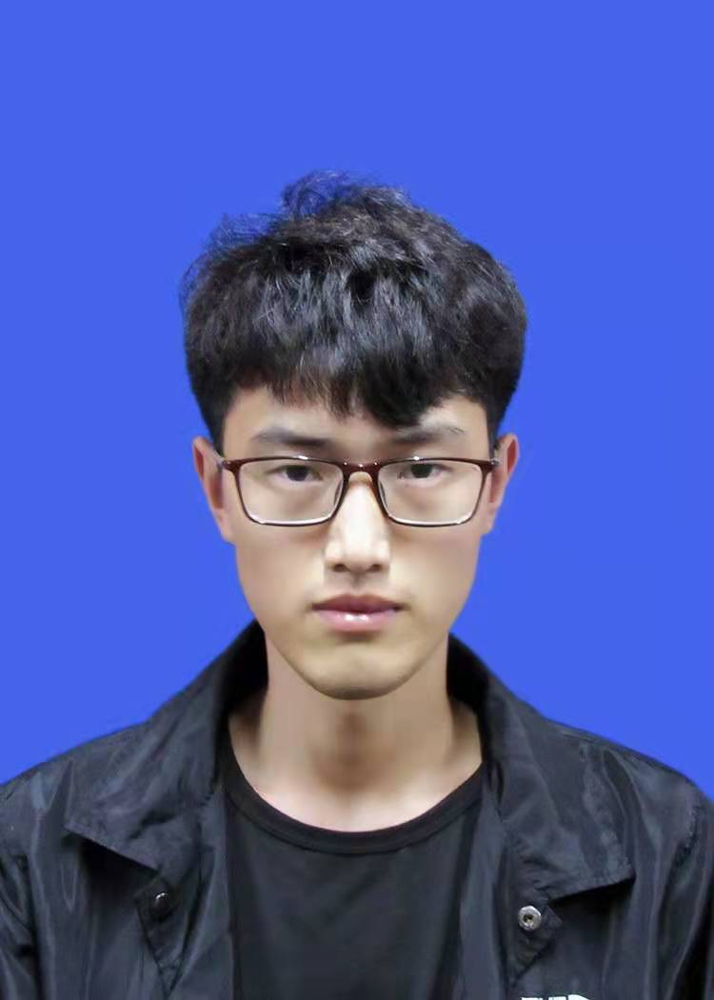

Zhentao Fan (范振滔)Master Student
High-Resolution Lab, |
 |
I will receive my Master degree from Shenyang Aerospace University (SAU) in June 2024, under the supervision of Prof. Yufeng Li and Dr. Xiang Chen. My research interests include artificial intelligence and its applications to computer vision, with special emphasis on image enhancement and object detection, and related vision problems in autonomous driving. I look forward to my academic journey. If you want to cooperate with me, kindly contact me via email.
Unpaired Deep Image Dehazing Using Contrastive Disentanglement Learning
Xiang Chen, Zhentao Fan, Zhuoran Zheng, Yufeng Li*, Yufeng Huang, Longgang Dai, Caihua Kong, Pengpeng Li
Preprint, 2022
[arXiv]
TARDet: Two-stage Anchor-free Rotating Object Detector in Aerial Images
Longgang Dai, Hongming Chen, Yufeng Li, Caihua Kong, Zhentao Fan, Jiyang Lu, Xiang Chen
IEEE Conference on Computer Vision and Pattern Recognition Workshops (CVPRW), pp. 4267-4275, 2022.
[paper]
Unpaired Deep Image Deraining Using Dual Contrastive Learning
Xiang Chen, Jinshan Pan, Kui Jiang, Yufeng Li, Yufeng Huang, Caihua Kong, Longgang Dai, Zhentao Fan
IEEE Conference on Computer Vision and Pattern Recognition (CVPR), pp. 2017-2026, 2022.
[paper][arXiv][project]